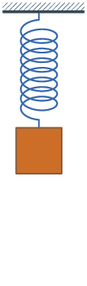
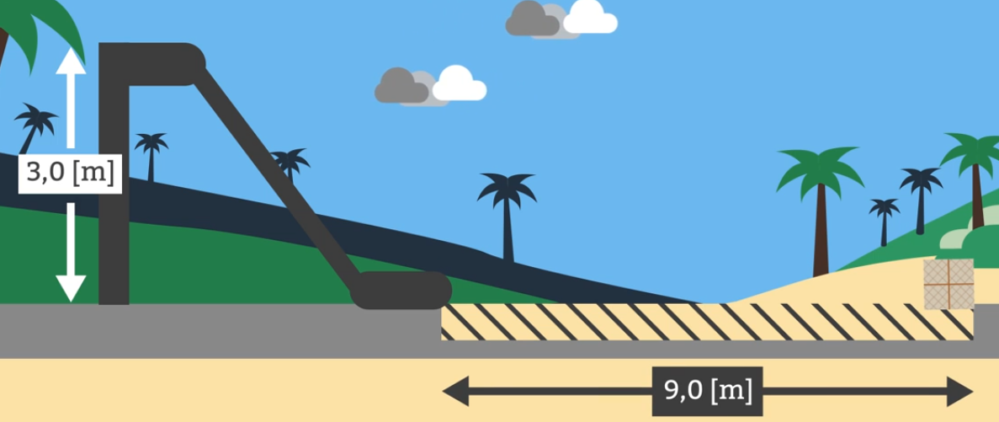
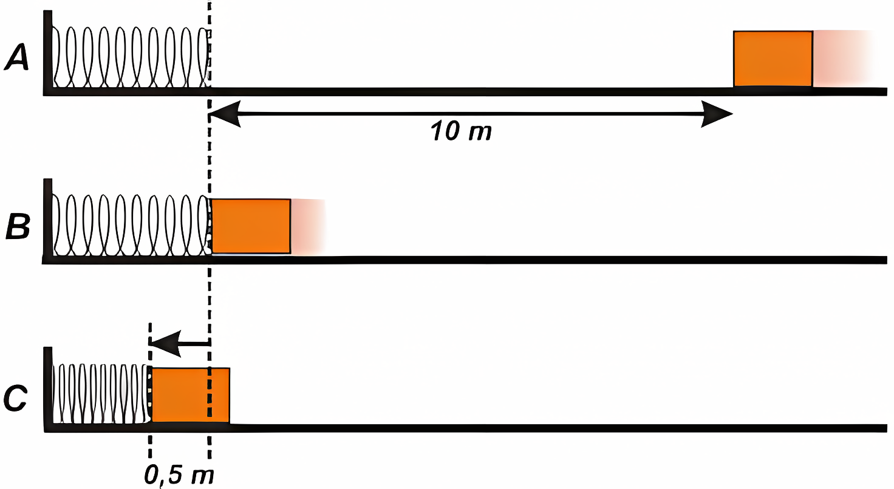
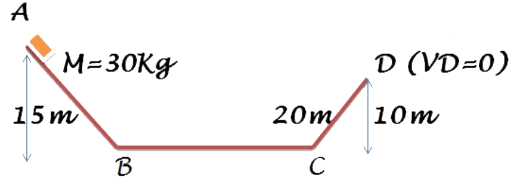
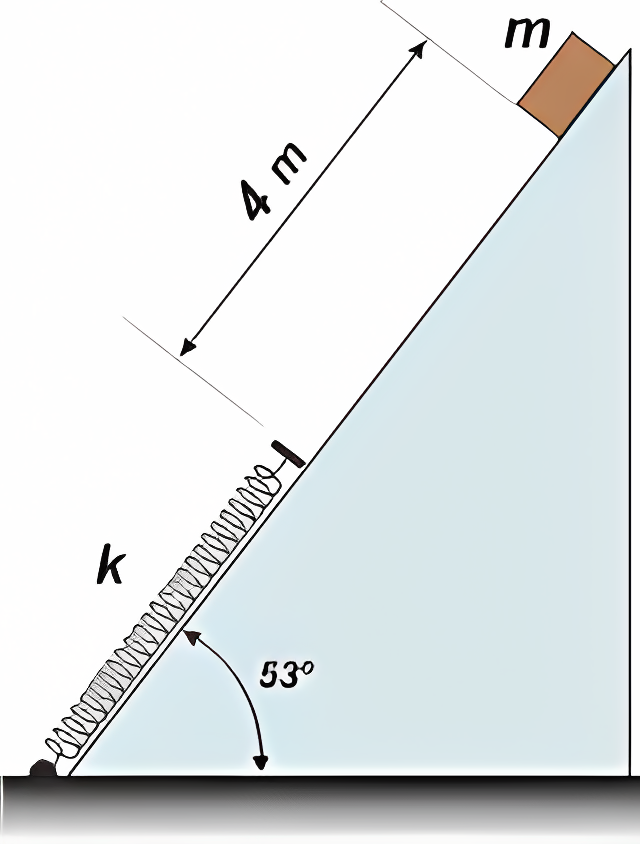
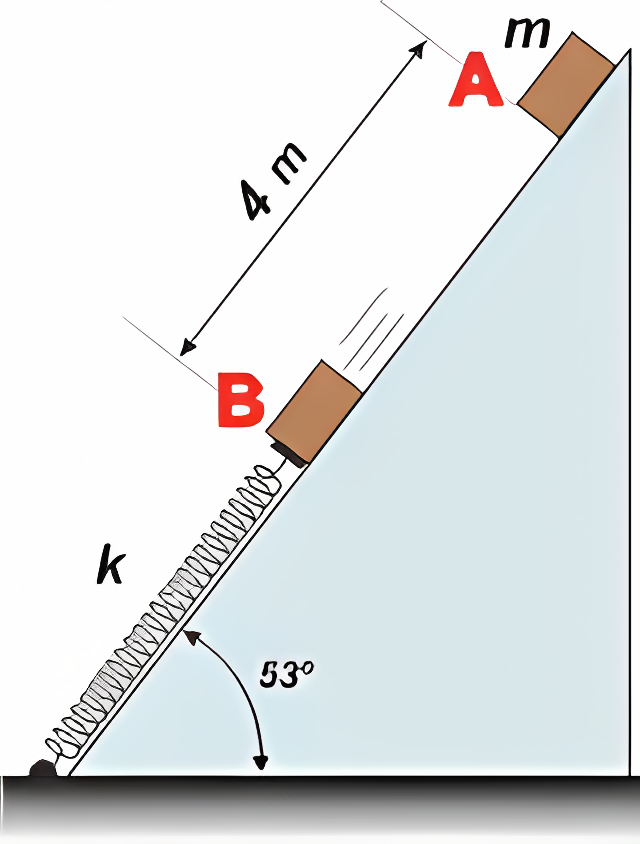
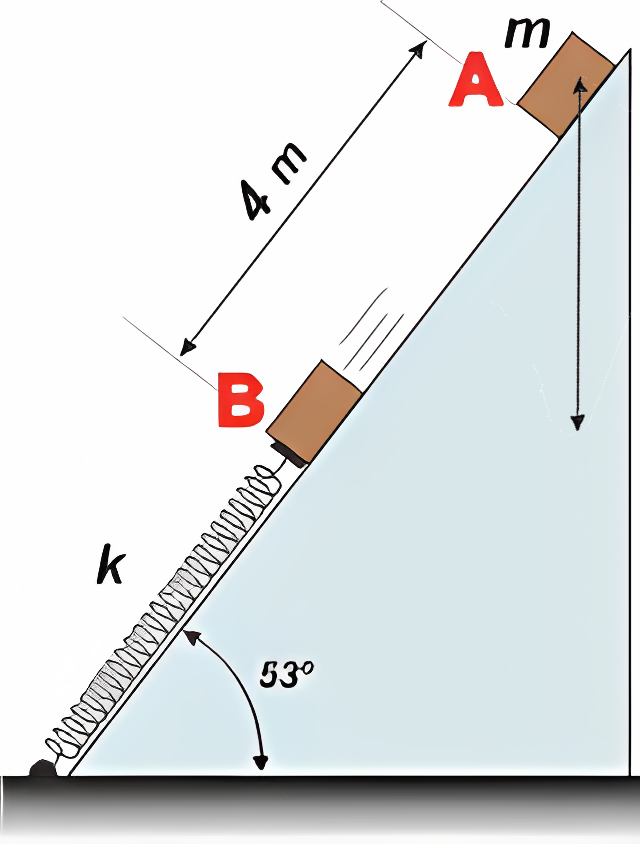
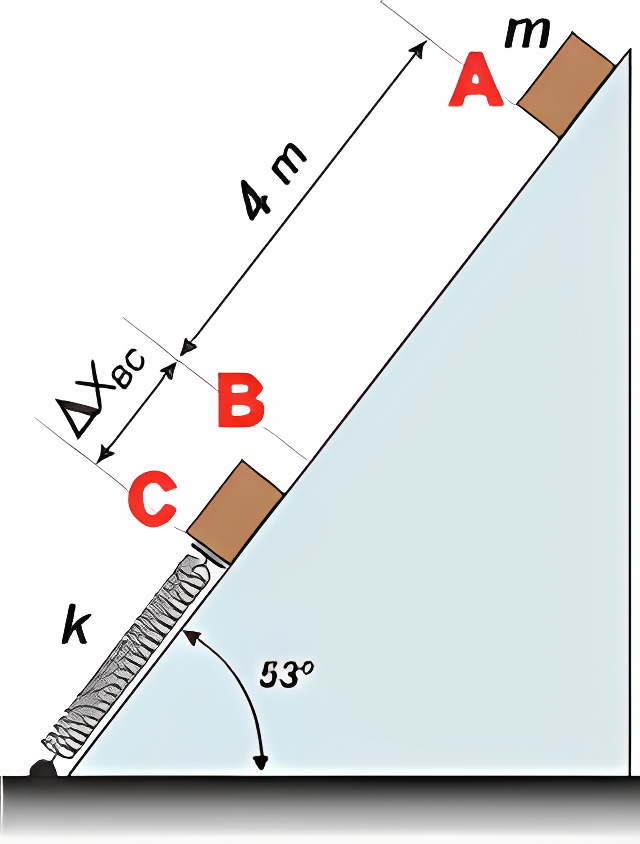

SOLO sistemas no conservativos
Sistemas no conservativos
Un sistema no conservativo es aquel en el que la energía mecánica total no se conserva debido a la presencia de fuerzas no conservativas (como la fricción o la resistencia del aire). En estos sistemas, el trabajo realizado por las fuerzas no conservativas depende de la trayectoria seguida y puede transformar energía mecánica en otras formas de energía (como calor).

Ejercicio 1
Un bloque de masa 2 kg, inicialmente en reposo, desciende desde una altura de 3 metros por una rampa sin roce, como se indica la figura. Luego, se desliza sobre una superficie horizontal con roce, hasta detenerse después de recorrer 9 metros. Calcular:
- La velocidad del bloque al llegar al final de la rampa.
- El trabajo realizado por la fuerza de roce en la superficie horizontal.
- El coeficiente de roce cinético entre el bloque y la superficie.

Para resolver este ejercicio, utilizaremos el hecho de que la energía mecánica total se conserva en la rampa (sin roce) y luego se pierde en la superficie horizontal debido al roce.
1. Velocidad al final de la rampa
La energía potencial inicial del bloque se convierte en energía cinética al final de la rampa. La energía potencial inicial es: \[ E_p = mgh = 2 \, \text{kg} \cdot 9.81 \, \text{m/s}^2 \cdot 3 \, \text{m} = 58.86 \, \text{J} \] La energía cinética al final de la rampa es: \[ E_k = \frac{1}{2} mv^2 \] Igualando la energía potencial inicial a la energía cinética al final de la rampa: \[ mgh = \frac{1}{2} mv^2 \]
Despejando la velocidad \(v\): \[ v = \sqrt{2gh} = \sqrt{2 \cdot 9.81 \, \text{m/s}^2 \cdot 3 \, \text{m}} = \sqrt{58.86} \approx 7.67 \, \text{m/s} \]
2. Trabajo realizado por la fuerza de roce
El trabajo realizado por la fuerza de roce se puede calcular utilizando la energía cinética al final de la rampa y la distancia recorrida en la superficie horizontal. La energía cinética al final de la rampa es: \[ E_k = \frac{1}{2} mv^2 = \frac{1}{2} \cdot 2 \, \text{kg} \cdot (7.67 \, \text{m/s})^2 = 58.86 \, \text{J} \]
El trabajo realizado por la fuerza de roce es igual a la energía cinética inicial, ya que el bloque se detiene: \[ W_{roce} = -E_k = -58.86 \, \text{J} \]
3. Coeficiente de roce cinético
El trabajo realizado por la fuerza de roce también se puede expresar como: \[ W_{roce} = -f_{r} \cdot d \] donde \(f_{r} = \mu_k \cdot N\) es la fuerza de roce, \(\mu_k\) es el coeficiente de roce cinético, \(N\) es la normal (que en este caso es igual al peso del bloque) y \(d\) es la distancia recorrida en la superficie horizontal. Sustituyendo: \[ -58.86 \, \text{J} = -\mu_k \cdot (2 \, \text{kg} \cdot 9.81 \, \text{m/s}^2) \cdot 9 \, \text{m} \]
Despejando el coeficiente de roce cinético \(\mu_k\): \[ \mu_k = \frac{58.86 \, \text{J}}{2 \, \text{kg} \cdot 9.81 \, \text{m/s}^2 \cdot 9 \, \text{m}} = \frac{58.86}{176.58} \approx 0.333 \]
Ejercicio 2
Una caja de 30 kg se desliza por una superficie horizontal con rozamiento, cuyo coeficiente cinético es \(\mu_k = 0.4\), hasta chocar con un resorte horizontal de masa despreciable, cuya constante es 7200 N/m y que inicialmente no posee deformación, al que comprime hasta detenerse en 0,5m. Determinar la velocidad de la caja al llegar al resorte, y la que tenía a 10 m de su extremo.

Para resolver este ejercicio, utilizaremos la no conservación de la energía y el trabajo realizado por la fuerza de roce. \[ W_{roz} = E_{MC} - E_{MB} \] Defininos el trabajo del rozamiento como: \[ W_{roz} = -\mu_k \cdot N \cdot d \] Dado que estamos en una superficie horizontal, la normal es igual al peso de la caja: \[ N = mg \] \[ W_{roz} = -\mu_k \cdot mg \cdot d \] Por lo tanto, la ecuación queda: \[ -\mu_k \cdot mg \cdot d = E_{MC} - E_{MB} \]
Ahora, la energía mecánica en el momento B (cuando la caja llega al resorte) es igual a la energía cinética inicial de la caja, ya que no hay energía potencial gravitacional en una superficie horizontal: \[ E_{MB} = \frac{1}{2} mv_B^2 \] La energía mecánica en el momento C (cuando el resorte está comprimido al máximo) es igual solo a la energía potencial del resorte: \[ E_{MC} = \frac{1}{2} k x^2 \] Sustituyendo en la ecuación: \[ -\mu_k \cdot mg \cdot d = \frac{1}{2} k x^2 - \frac{1}{2} mv_B^2 \]
La distancia \(d\) es la compresión máxima del resorte: \[ d = x = 0.5 \, \text{m} \] \[ -\mu_k \cdot mg \cdot x = \frac{1}{2} k x^2 - \frac{1}{2} mv_B^2 \] Despejamos \(v_B\): \[ \frac{1}{2} mv_B^2 = \frac{1}{2} k x^2 + \mu_k \cdot mg \cdot x \] \[ v_B^2 = \frac{k x^2}{m} + 2 \mu_k g x \] \[ v_B = \sqrt{\frac{k x^2}{m} + 2 \mu_k g x} \]
Sustituyendo los valores: \[ v_B = \sqrt{\frac{7200 \cdot (0.5)^2}{30} + 2 \cdot 0.4 \cdot 9.81 \cdot 0.5} \] \[ v_B = 8 \, \text{m/s} \]
Velocidad a 10 m del resorte
Para encontrar la velocidad de la caja a 10 m del resorte, utilizamos la conservación de la energía entre el momento A (cuando la caja está a 10 m del resorte) y el momento B (cuando la caja llega al resorte).
\[ W_{roz} = E_{MB} - E_{MA} \]
\[ -\mu_k \cdot N \cdot d = \frac{1}{2} mv_B^2 - \frac{1}{2} mv_A^2 \] Despejamos \(v_A\): \[ \frac{1}{2} mv_A^2 = \frac{1}{2} mv_B^2 + \mu_k \cdot N \cdot d \] \[ v_A^2 = v_B^2 + \frac{2 \mu_k N d}{m} \] \[ v_A = \sqrt{v_B^2 + \frac{2 \mu_k N d}{m}} \] Sustituyendo los valores: \[ v_A = \sqrt{(8)^2 + \frac{2 \cdot 0.4 \cdot 30 \cdot 9.81 \cdot 10}{30}} = v_A = 11.94 \, \text{m/s} \]
Ejercicio 3
Una caja cae en una pendiente, para posteriormente volver a subir en otra pendiente hasta los 10 m hasta quedarse quieta. Si el tramo CD tiene un rozamiento, ¿cuál es la fuerza neta ejercido por todas las fuerzas no conservativas?

Dada la altura inicial de 15 m, la energía potencial gravitacional inicial es: \[ E_{pA} = mgh = 30 \, \text{kg} \cdot 9.81 \, \text{m/s}^2 \cdot 15 \, \text{m} = 4414.5 \, \text{J} \] La energía potencial gravitacional final en el punto D es: \[ E_{pD} = mgh = 30 \, \text{kg} \cdot 9.81 \, \text{m/s}^2 \cdot 10 \, \text{m} = 2943 \, \text{J} \] Por lo tanto, la diferencia de energía potencial gravitacional entre A y D es: \[ \Delta E_p = E_{pD} - E_{pA} = 2943 \, \text{J} - 4414.5 \, \text{J} = -1471.5 \, \text{J} \]
Esto implica que la energía mecánica total del sistema disminuye en 1471.5 J al llegar al punto D. La unica fuerza no conservativa que actúa en este caso es el rozamiento en el tramo CD, que realiza un trabajo negativo, ya que disipa energía del sistema.
Entonces, el trabajo realizado por la fricción en el tramo CD es igual a la disminución de energía mecánica total: \[ W_{roz} = \Delta E_p = 1471.5 \, \text{J} \]
El trabajo del rozamiento se puede calcular como: \[ W_{roz} = -\mu_k \cdot N \cdot d \] o: \[ W_{roz} = -F_{roz} \cdot d \] Ya que tenemos el trabajo del rozamiento, podemos decir que: \[ W_{roz} = -1471.5 \, \text{J} \] \[ W_{roz} = -F_{roz} \cdot d \] Despejando la fuerza de rozamiento: \[ F_{roz} = \frac{-W_{roz}}{-d} \]
Sustituyendo los valores, la distancia \(d\) es la distancia recorrida en el tramo CD, que es de 20 m: \[ F_{roz} = \frac{1471.5 \, \text{J}}{20 \, \text{m}} = 73.58 \, \text{N} \]
Ejercicio 4
Un paquete de 2 kg se suelta en una pendiente de 53° a 4 m de un resorte , con constante de 120 N/m sujeto a la base de la pendiente. El coeciente de fricción entre el paquete y la pendiente vale 0,5.
- a ¿Qué rapidez tiene el paquete justo antes de llegar al resorte?
- ¿Cuál es la compresión máxima del resorte?

Rapidez antes de llegar al resorte
Dado que hay fricción, la energía mecánica no se conserva completamente. La energía potencial gravitacional se convierte en energía cinética y trabajo realizado por la fricción. Llamemos A al momento en el que el bloque se suelta y B al instante en que llega a tocar al resorte.

La diferencia de energía mecánica entre esos dos estados es igual al trabajo del rozamiento. \[ -W_{roz} = E_{MB}-E_{MA} \] \[ -W_{roz} = \frac{1}{2}mv^2 +mgh_B - mgh_A \]
Calculemos el trabajo del rozamiento: \[ -W_{roz} = \mu_k \cdot N \cdot d \] Ya que estamos en una pendiente, la normal es: \[ N = mg \cdot \cos(\theta) \] Sustituyendo: \[ -W_{roz} = \mu_k \cdot mg \cdot \cos(\theta) \cdot d \]
Sustituyendo los valores: \[ -W_{roz} = 0.5 \cdot 2 \, \text{kg} \cdot 9.81 \, \text{m/s}^2 \cdot \cos(53°) \cdot 4 \, \text{m} \] \[ -W_{roz} \approx 0.5 \cdot 2 \cdot 9.81 \cdot 0.6018 \cdot 4 \approx -23.59 \, \text{J} \] Ahora, igualamos el trabajo del rozamiento a la diferencia de energía mecánica: \[ -23.59 \, \text{J} = \frac{1}{2}mv^2 + mgh_B - mgh_A \] \[ -23.59 \, \text{J} = \frac{1}{2}mv^2 + mg(h_B - h_A) \]
\((h_B - h_A)\) es la diferencia de altura entre A y B, lo que podemos sacar con trigonometría:

\[ h_B - h_A = d \cdot \sin(\theta) = 4 \cdot \sin(53°) \approx 4 \cdot 0.7986 \approx 3.19 \, \text{m} \]
Dado que estamos restando la altura menor a la mayor, el resultado es negativo. Reemplazando en la ecuación: \[ - 23.59 \, \text{J} = \frac{1}{2}mv^2 + mg(-3.19) \] \[ -23.59 \, \text{J} - mg(-3.19) = \frac{1}{2}mv^2 \] \[ \frac{1}{2}mv^2 = -23.59 \, \text{J} + 2 \cdot 9.81 \cdot 3.19 \] \[ \frac{1}{2}mv^2 = -23.59 \, \text{J} + 62.58 \, \text{J} \]
Despejando \(v\): \[ v = \sqrt{38.99} \approx 6.24 \, \text{m/s} \]
Compresión máxima del resorte
Llamemos C al momento en que el resorte está comprimido al máximo. Para saber la compresión máxima del resorte, utilizamos la no conservación de la energía entre el momento B (cuando el paquete llega al resorte) y el momento C (cuando el resorte está comprimido al máximo).

La diferencia de energía mecánica entre esos dos estados es igual al trabajo del resorte y el trabajo del rozamiento. \[ -W_{roz} = E_{MC}-E_{MB} \] \[ -W_{roz} = \frac{1}{2}kx^2 + mgh_C - \left( \frac{1}{2}mv_B^2 + mgh_B \right) \] Calculemos el trabajo del rozamiento: \[ -W_{roz} = \mu_k \cdot N \cdot d \] Ya que estamos en una pendiente, la normal es: \[ N = mg \cdot \cos(\theta) \] Sustituyendo: \[ -W_{roz} = \mu_k \cdot mg \cdot \cos(\theta) \cdot d \]
La distancia \(d\) es la compresión máxima del resorte, que llamaremos \(x\). Entonces reemplazando: \[ -W_{roz} = \mu_k \cdot mg \cdot \cos(\theta) \cdot x \] \[-\mu _k \cdot mg \cdot \cos(\theta) \cdot x = \frac{1}{2}kx^2 + mgh_C - \left( \frac{1}{2}mv_B^2 + mgh_B \right)\] \[-\mu _k \cdot mg \cdot \cos(\theta) \cdot x = \frac{1}{2}kx^2 - \frac{1}{2}mv_B^2 + mg(h_C - h_B)\] Resulta que \(h_B - h_C\), se puede calcular de la misma manera que antes, pero ahora con la compresión del resorte \(x\): \[ h_B - h_C = d \cdot \sin(\theta) = x \cdot \sin(53°) \] \[-\mu _k \cdot mg \cdot \cos(\theta) \cdot x = \frac{1}{2}kx^2 - \frac{1}{2}mv_B^2 - mg(x \cdot \sin(53°))\]
Reemplazando los valores: \[-0.5 \cdot 2 \cdot 9.81 \cdot \cos(53°) \cdot x = \frac{1}{2} \cdot 120 \cdot x^2 - \frac{1}{2} \cdot 2 \cdot (6.24)^2 + 2 \cdot 9.81\cdot 0.8x)\] \[-5.91 \cdot x = 60 \cdot x^2 + 38.94 - 15.67x\] Esto es una ecuación cuadrática: \[ 60x^2 + (-15.67 + 5.91)x - 38.94 = 0 \] \[ 60x^2 - 9.76x - 38.94 = 0 \]
Al resolverla, da 2 soluciones: \[ x_1 \approx 0.89 \, \text{m} \] \[ x_2 \approx -0.72 \, \text{m} \]
De las cuales, la única solución válida es \(x_1 \approx 0.89 \, \text{m}\).